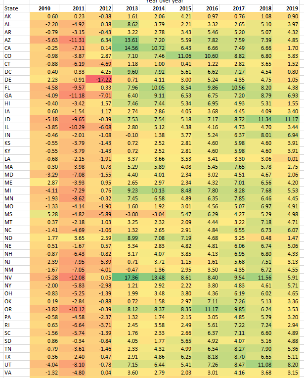
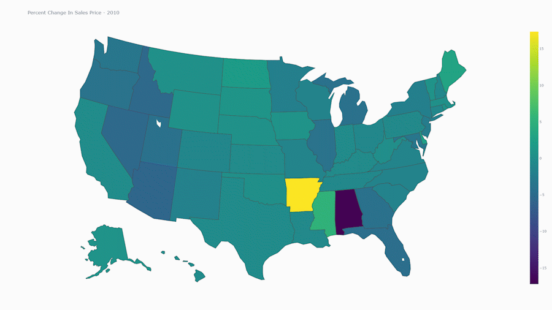
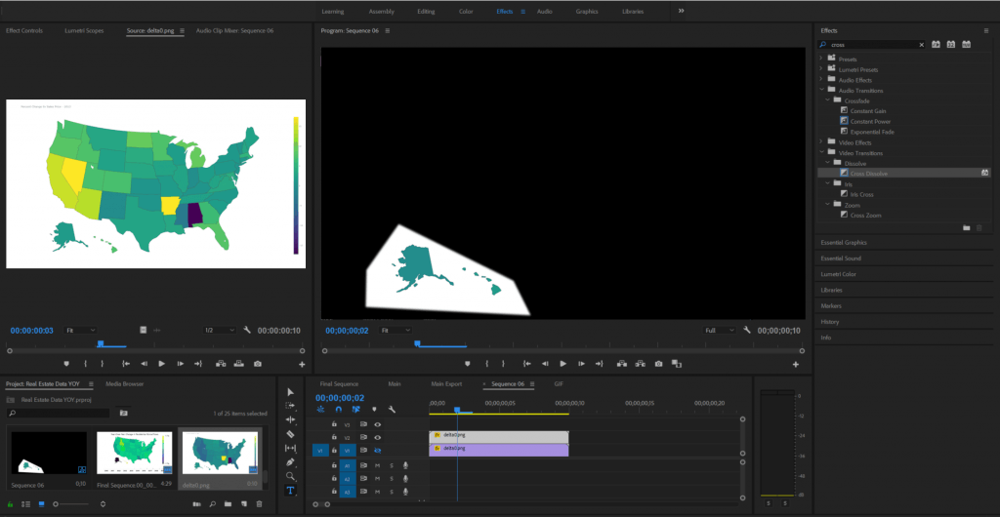
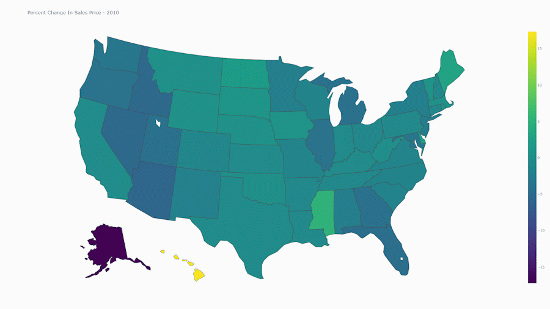
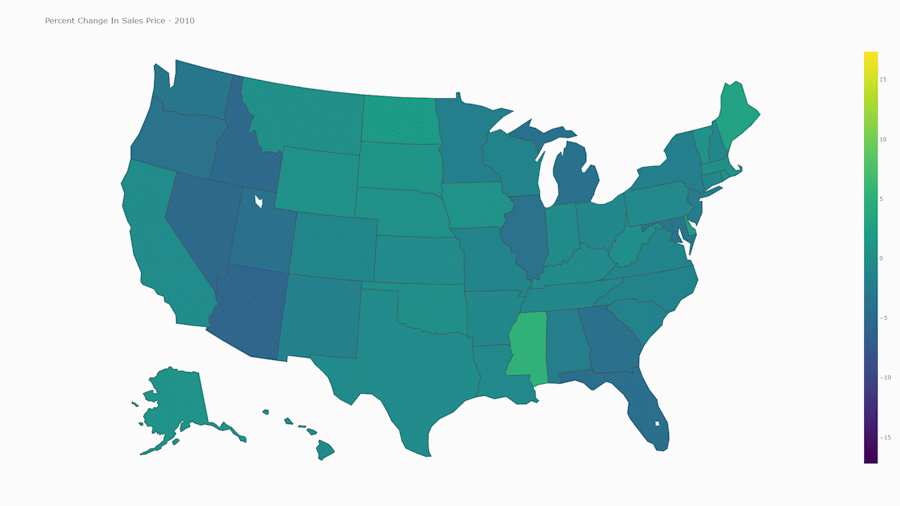

Real Estate Data Visualization- Part 1
As a former real estate agent, aspiring investor, and software engineer, I have set out to learn more about the data behind real estate. Zillow is an excellent resource to find an overview of the trends going on in the real estate market. For this visualization, I have taken the time to compile the average sales price for residential homes for each state yearly. Zillow provided me with the average sale price of a house for a given state over one month. The following visualization shows the Year-Over-Year calculation of home prices based on Zillow’s data.
To create this visualization, I used the plotly data visualization framework to export a Choropleth map. Colors are automatically generated to correspond a to specific value in the dataset. The code for this project is very simple. If you would like to take a look you can view my Gist on GitHub.
Below shows the data that my program consumed:

One of the challenges that I faced when creating this visualization is having the ability to specify the minimum and maximum values of for the chart. I never managed to figure it out. In order to get a minimum viable data visualization out the door, I ended up creating two visualization sequences.
For the first sequence, I hard coded Arkansas and Alabama to the minimum value and maximum value in my dataset. This forced plotly to normalize the colors for the rest of the states to be within that range.

In Adobe Premiere, I masked the part of the image sequence containing Hawaii and Alaska. This provided me with a normalized data visualization for Hawaii and Alaska. I can then overlay this masked portion onto a separate visualization (one where the data for the lower 48 states is correct.)

Then I hard coded Hawaii and Alaska to be the minimum and maximum values from my dataset. The masked out portion above gets overlayed on top of a visualization that looks like this:

The resulting composite looks like this:

From there, there was a few hours of manual tweaking and artitisic adjustments to transform the visualization into something YouTube ready. I hope you all found this to be interesting. Let me know if you have any topics that you would like to see covered.